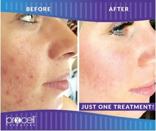
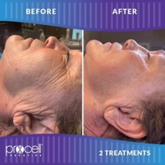
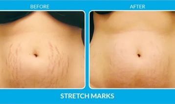

We age visibly and invisibly every day. ProCell microchanneling creates many controlled micro-injuries in the skin, beginning a healing response that supports new collagen, elastin and fibroblasts.
After treatment, ProCell’s growth-factor serum is applied to promote healing with minimal inflammation and enhance serum delivery.
What it may address
- Uneven skin tone and texture
- Fine lines and wrinkles
- Acne, surgical or injury scars
- Stretch marks
- Enlarged pores
- Hyperpigmentation and rosacea
- Dull-looking complexion and lost elasticity
- Hair loss or thinning hair
Results & timing
The production of new collagen can take several weeks, though some clients notice an improvement in skin quality within the first 24 hours. After two or three treatments, changes may become more noticeable. Six or more treatments may be recommended for scarring, laxity and wrinkles.
For light anti-aging goals, one to three treatments may be sufficient. Deeper wrinkles or scarring may require four to six, typically spaced three to four weeks apart. Results can last from two to ten years depending on age and lifestyle.
Preparing for treatment
Hydration is important because collagen production relies on water. The current guidance recommends drinking approximately half your body weight in ounces of water each day during the week before treatment—for example, 70 ounces for a 140-pound person.
Treatment areas
- Face
- Neck, shoulders and chest
- Hands and arms
- Knees and legs
- Stomach
What’s in the serum?
ProCell’s Microchannel Delivery Serum contains bone-marrow-derived growth factors in a hyaluronic-acid suspension. The current site states that there are no human, animal or plant cells, DNA, blood or other foreign substances in the serum.
Visible examples



Individual results vary. A consultation is required to determine whether this service is appropriate for you.